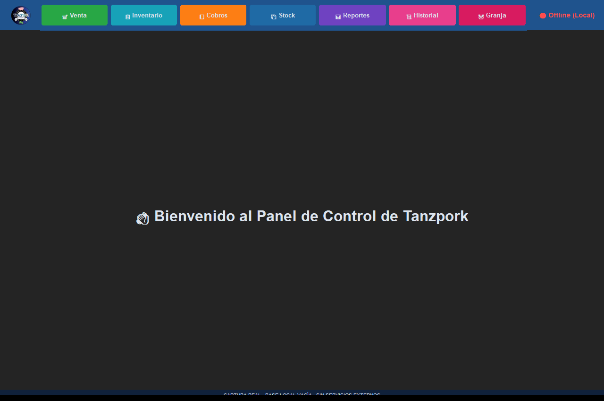
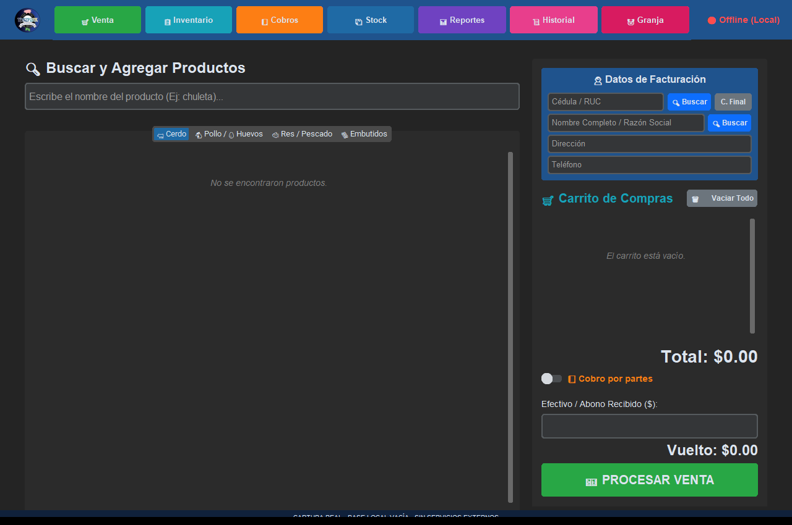

Gestión e inventarios
TerminadoTRANSPORK
Sistema de escritorio para integrar ventas, inventario, cobros y gestión de una granja porcina.
Qué resuelve
Sistema de escritorio para integrar ventas, inventario, cobros y gestión de una granja porcina.
Funciones implementadas
- Registro de productos y ventas con detalle
- Ventas a crédito y abonos
- Registro de madres y camadas
- Flujo guiado de faenamiento y cálculo de merma
- Sincronización de registros locales con la nube
Demostración pública no disponible. Puedes consultar el alcance o solicitar una presentación.
Consultar sobre este proyecto ↗VISTA DEL PROYECTO
Fotografías y capturas · 3
Selecciona una imagen para ampliarla. Usa las flechas para recorrer la galería.


Ampliar ↗ Ampliar ↗
Ampliar ↗

Ampliar ↗EN LA PRÁCTICA
Gestión diaria de una granja
- 1
Registrar productos o actualizar existencias.
- 2
Añadir productos al carrito y registrar una venta o un crédito.
- 3
Consultar cobros, registros de granja y sincronización pendiente.
Requiere la base de datos y los servicios originales; el recorrido describe el código revisado.
Abre primero el gestor local con python tools/manage_media.py.